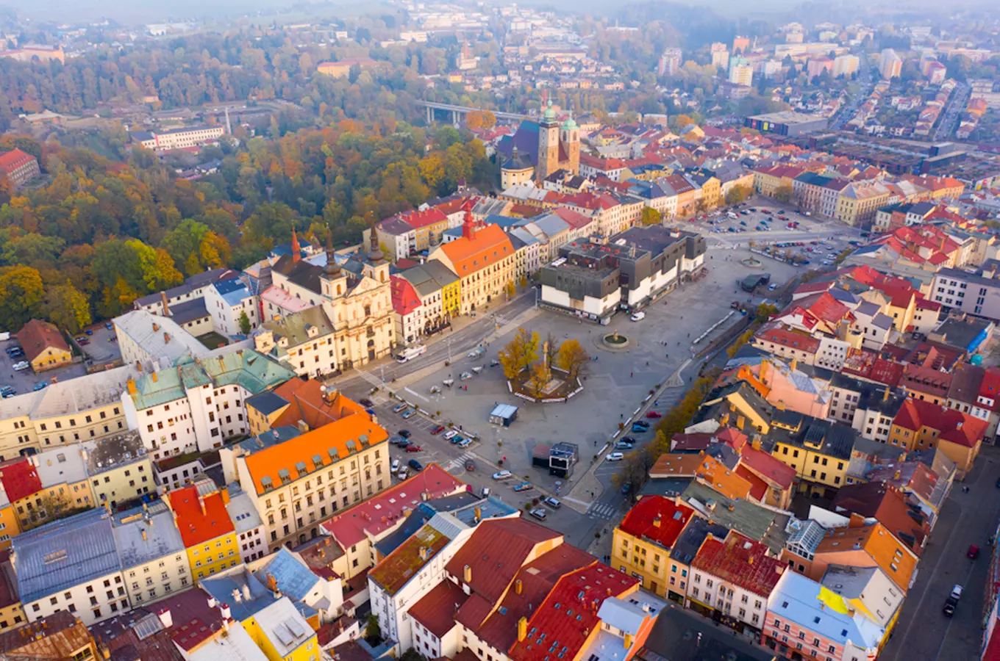
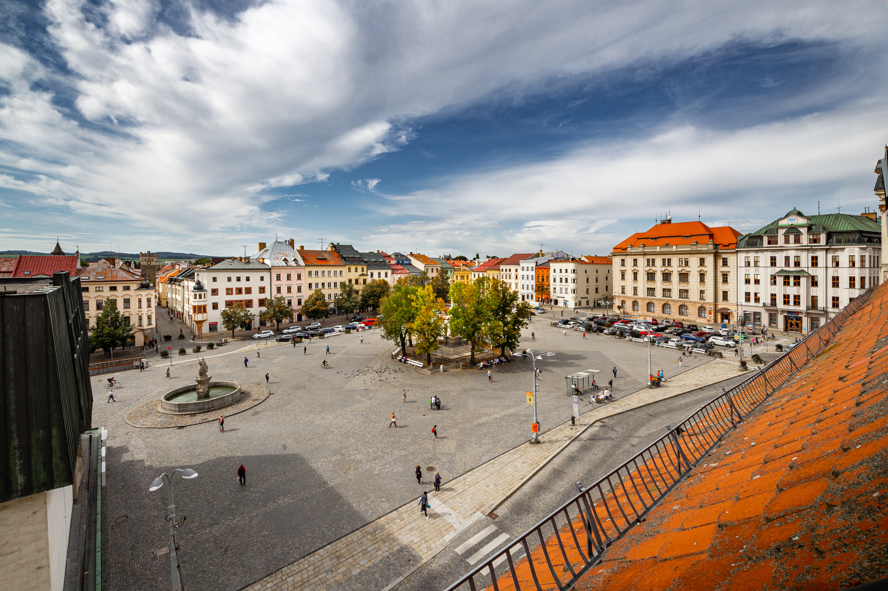
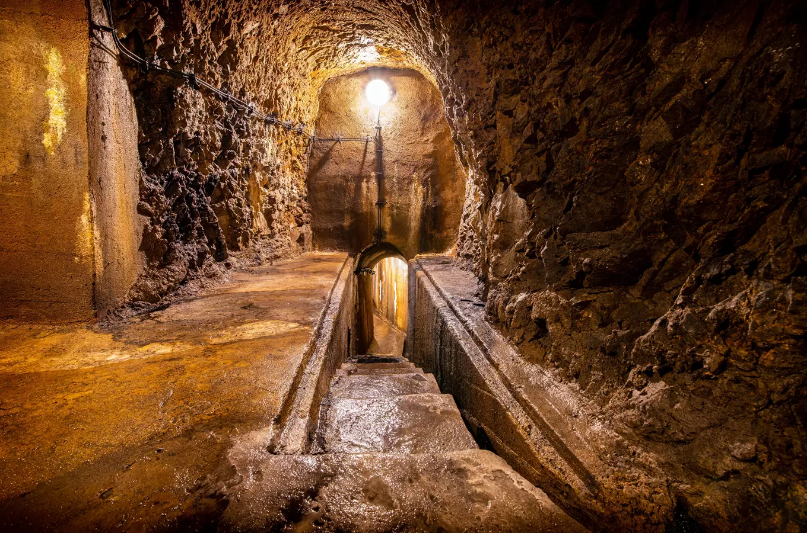
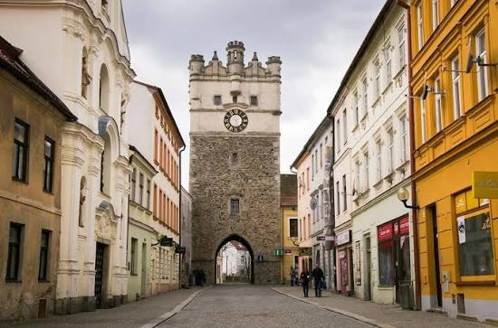

Discover a historic mining town known for its medieval streets, underground tunnels and rich heritage in the heart of Czechia.
Jihlava is a historic city in the Vysočina Region of Czechia. It grew into an important medieval settlement during the silver mining boom in the 13th century, attracting merchants and miners from acros Europe.
Today, Jihlava combines a historic town centre with cultural attractions and a network of underground passages beneath its streets. Its location in the Bohemian-Moravian Highlands also makes it a convenient base for exploring the surrounding countryside.
Vysočina Region
Czechia
Silver mining and underground tunnels
Bohemian-Moravian Highlands
Masaryk Square is the main square of Jihlava and one of the largest historic squares in Czechia. It is lined with colourful buildings, arcades and historic houses that reflect the city's medieval origins and later architectural styles.
The square remains a central meeting place for residents and visitors. Cafés, shops and cultural events bring life to this historic part of the city throughout the year.

Beneath the historic streets of Jihlava lies an extensive network of underground corridors and chambers. The passages developed over centuries and were used for storage and other practical purposes by the city's inhabitants.
Today, parts of the underground are open to visitors on guided tours. The dimly lit corridors offer a different perspective on the city's past and reveal a hidden world beneath its busy streets.

The Gate of the Mother of God is the best-preserved historic town gate in Jihlava and an important reminder of the city's medieval fortifications. It formed part of the defensive walls that once protected the town.
Today, the gate is one of Jihlava's most distinctive historic landmarks. Visitors can admire its stone architecture and learn more about the city's medieval past.

Approx. 54,000 residents
Approx. 87 km²
Granted in 1233
Approx. 525 m